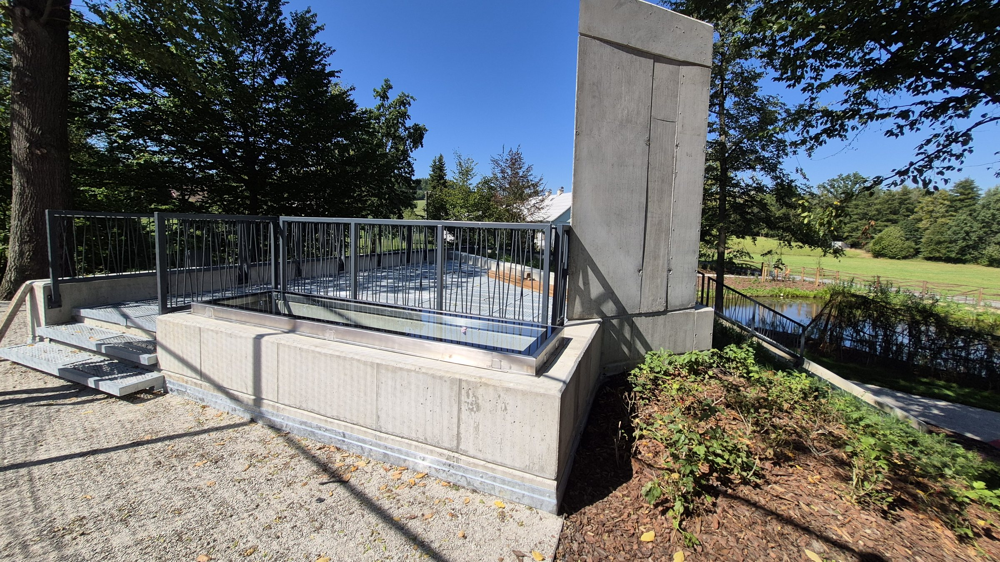
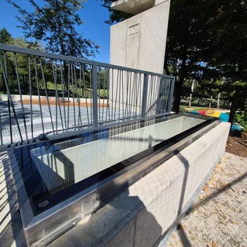
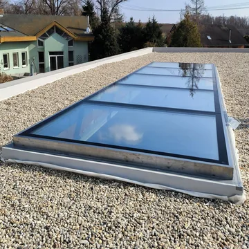

České realizace.
Pochozí světlíky GLASSFLOOR v tuzemských domech, bytových projektech, zdravotnictví i veřejném prostoru. Výběr staveb z posledních let.
- 2022první dodávky v ČR
- 8 × 2,2 mnejvětší dodaný světlík
- REI 30požárně odolné varianty
- Celá ČRod Karlovarska po Ostravsko
-
2026
Bytový dům, požárně odolné světlíky REI 30Praha 4GLASSFLOOR Firestop (rám Pure)4× · 800×800 mm
-
2026
Rodinný důmPelhřimov · VysočinaGLASSFLOOR Pure1× · 1000×1000 mm
-
2026
Rodinný dům, požárně odolné světlíky REI 30Prostějov · OlomouckýGLASSFLOOR Firestop (rám Pure)2× · 700×1000 mm (otvor 750×1000)
-
2026
Střešní pochozí světlíkČeská republikaGLASSFLOOR Chrome1× · 250×80 cm
-

2026Altán v parku, pochozí světlíkVělopolí · MoravskoslezskýGLASSFLOOR Chrome1× · 300×60 cm -
2025
Bytový dům, kruhové světlíky včetně požárně odolnýchPraha 6GLASSFLOOR Circle + Circle Firestop5× · Ø 1000 mm (pozice O.115, O.116, O.117, O.40X)
-
2025
Hospic, prosvětlení atriaČerčany · StředočeskýGLASSFLOOR Pure2× · 865×1385 a 970×1375 mm
-
2025
Komerční objekt, velkoformátový světlík 2,6 × 1,8 mOstrava-Třebovice · MoravskoslezskýGLASSFLOOR STEP1× · 2610×1800 mm
-
2024
Bytový dům v bývalém pivovaru, anglický dvorekPraha 4 (Nusle)GLASSFLOOR Pure1× · cca 1200×1200 mm
-
2024
Záchrana historického objektu, kruhové zaskleníHuť u Šindelové · KarlovarskýGLASSFLOOR Circle1× · Ø 1000 mm
-
2024
Poliklinika a kolonáda, požárně odolné prosklení REI 30Luhačovice · ZlínskýGLASSFLOOR Firestop (rám Pure)2× · 920×920 a 1860×920 mm
-

2024Wellness centrum, světlík 8 × 2,2 mSobotovice · JihomoravskýGLASSFLOOR STEP s rámem Chrome1× · otvor 8000×2200 mm -
2024
Rodinný dům, terasaBrno · JihomoravskýGLASSFLOOR Pure1× · 800×800 mm
-
2024
Rodinný dům, terasaPraha 4GLASSFLOOR Pure1× · 2500×800 mm
-
2024
Rodinný dům, terasa a zeleň na střešeKralice na Hané · OlomouckýGLASSFLOOR Chrome + Pure2× · Chrome 900×900 a Pure 2000×1000 mm
Výběr realizací pochozích světlíků GLASSFLOOR v České republice. Každý světlík vzniká na míru podle konkrétní stavby, od rodinných domů po velkoformátová řešení pro veřejné a komerční objekty.
Zpět na reference ze Švýcarska